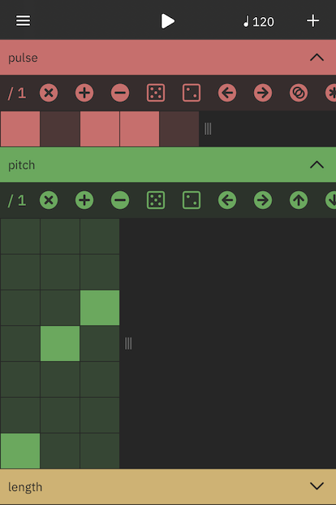
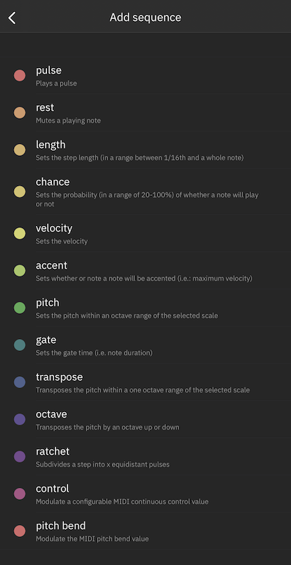
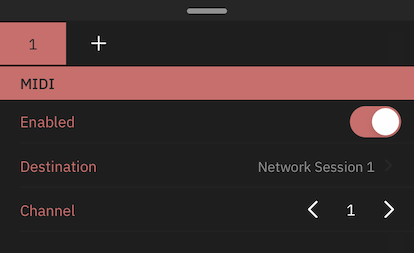

cykle is an innovative, semi-generative melodic step sequencer for iOS that is based around the concept of sequencing individual musical parameters (such as pitch, velocity, length, transposition, etc.) independently, by way of decoupled sequencer lanes. thus, the interplay between simple elements yields complex and musically interesting results.
the design of cykle was partly inspired by the article Manipulations of Musical Patterns (1981) by composer Laurie Spiegel.
cykle can be launched either as a standalone app or as an Audio Unit 3 (AUv3) MIDI plugin in a compatible host (such as AUM, ApeMatrix or Beatmaker 3).
the standalone app communicates with other MIDI-enabled apps via CoreMIDI virtual endpoints (configurable via the channel view).
this manual uses various terms specific to sequencers and cykle, which will be clarified below:
step a step is an atomic unit in a sequence. a step can be either binary (on/off) or scalar value (for instance a pitch class such as D, or a beat division such as 1/16th note.
sequence a sequence is a sequentially ordered list of steps. there are various types of sequences (such as pulse, pitch and velocity), each of which will be described in more detail shortly.
channel a channel contains a list of sequences which together yield a musical phrase. channels play simultaneously, similar to the independent channels of audio on a mixing console. and each of the channels can send MIDI to a different destination and/or channel.
pattern a pattern contains one or more channels (in the AUv3 version a pattern contains a single channel, since any number instances of the plugin and so any number of 'channels' can be loaded) as well as the musical metadata such as the tempo, scale and key.

the main view is the first view you see when opening cykle. it contains sequencer lanes of various types which are displayed as expandable cells. new sequences can be added to the channel by tapping the + icon in the top right of the screen. sequences can be removed by swiping to the left on a non-expanded cell and tapping 'delete'.
one of cykle's defining features is that each sequence can have a it's own length. combining sequences of different lengths is a powerful technique, as you can easily generate regular and self-similar musical phrases.

tapping the + icon in the top right of the screen opens at 'add sequence' menu, where you can add new sequence lanes to the currently selected channel. note that each sequence type can only appear in the pattern once, with the exception of the 'control' sequence, of which there can be any number. each of the various sequencer types modulates the pattern in a specific way. we will go over them now:
pulse the pulse sequence sets whether a given step will play or not, using a row of on/off steps, similar to a Roland X0X-style drum machine. by default, the pulse sequence emits the root note of the selected scale. in order to select other pitches, it has to be combined with the pitch sequence.
rest the rest sequence is the inverse of the pitch sequence, meaning that an active step will mute the events that would otherwise play on that step. the rest sequence can by used in conjunction with the pulse sequence to generate more complex pulse patterns.
length the length sequence sets the duration of a given step in in a range between 1/16th and a whole note. by specifying different step lengths for each step you can generate more varied rhythmic patterns.
velocity the velocity sequence sets the velocity (i.e. loudness) of a step in the sequence. by specifiying different velocity setting for each step you can generate more dynamic sounding patterns. note that not all MIDI-destinations respond to velocity changes. for patterns without a velocity sequence, all MIDI notes default to a velocity of 100.
chance the chance sequence allows for randomness to be introduced into a pattern. the value on a given step sets the probability that the notes on that step will play within in a range of 20 (20% chance) to 100% (the note(s) will always play).
pitch the pitch sequence sets the pitch class per step. the eventual pitch that will play on the step is determined in conjunction with the octave and tranposition sequences. the values in the pitch sequence correspond to the diatonic pitches in the selected key and scale. unlike most other sequence types, the pitch sequence allows multiselection in order to create for polyphony. a step cannot be empty, use the pulse or rest sequences to add rests.
accent the accent sequence allows for specific step to be accented. this means that they will be played at a higher velocity, as configured in the Accent Velocity setting in the MIDI Settings menu (defaults to 120). an accented step overrides the value in the velocity sequence. a non-accented step plays at the velocity defined in the velocity sequence for that step, or at the default velocity (100).
gate the gate sequence sets the gate time (i.e. duration) of the events per step in a range between 1/16 and 1 whole note. longer gate times mean that the notes on a given step may overlap with events at subsequent steps.
transpose the transpose sequence allows you to transpose the MIDI note(s) on a step by the degrees in the selected scale.
octave the octave sequence tranposes the pitches of the notes on a given step up or down by one or more octaves. just like the pitch sequence, the octave sequence allows for multiselection, so notes can be duplicated over one or more octaves.
ratchet the ratchet sequence duplicates events in time by dividing a given step into a number of equidistant pulses, creating a roll of notes in a musical subdivision of the sequence's main pulse. this is another way of adding rhythmic variety to your patterns. the ratcheting technique was used extensively within the Berlin School of electronic music (e.g. Tangerine Dream et al.).
control the control sequence sends a MIDI CC (Continuous Control) message on a configurable destination number. CC values are commonly used to control synthesizer parameters such as filter cutoff, -resonance and envelope settings. by tapping the control destination number (e.g. '74 - Brightness') on the header cell, the output address can be selected. unlike other sequence types, a channel can contain any number of control sequences, allowing you to control a multitude of parameters at once.
pitch bend the pitch sequence send a MIDI pitch bend message which alters the pitch of a MIDI notes by a sub-semitone interval. the exact amount of alteration depends on the receiving MIDI device's implemetation.
patterns can be instantly transformed by various actions, allowing to instantly create subtle or dramatic changes in patterns. the available transformations are displayed horizontally scrollable area above the pattern grid of an expanded sequence cell. they are the following:
clock division divides the clock pulses on the specified cell, meaning that each step in the sequence gets played x times before moving to the next. this allows for longer patterns to be created from fewer steps.
clear turns all the steps in a binary pattern or sets each step in a scalar pattern to the default value.
add appends a step to the sequence. you can also change the sequence length by dragging the resizing indicator to the right of the sequence grid.
remove removes the last step from the sequence.
randomize randomizes the sequence. for binary sequences, randomize produces a euclidean pattern, which results in more even patterning and thus more musically interesting results.
mutate randomly changes one value in the pattern, allowing to gradually introduce some change without changing the entire pattern.
shift left/right shifts (or, rotates) the sequence along its horizontal axis, meaning that step 1 moves to step 2, step 2 to step 3, etc.
shift up/down shifts or rotate the sequence along its vertical axis, meaning that all steps move one item up or down along the list of available values.
invert inverts the pattern. for binary patterns this means that all the steps that active are set to inactive and vice versa. for scalar patterns this means the values will be mirrored along the vertical axis, i.e., a value on the second-lowest step becomes the second-highest, etc.
multiply doubles the pattern by duplicating the existing steps.
bisect bisects the pattern by removing the latter half of the steps.
tapping the BPM (e.g., 120) indicator in the navigation bar opens the pattern menu, where you can set the tempo, scale and key of the selected pattern.
in the AUv3 version these same settings are located in the hamburger menu on the top left. here you can also set the base octave and accent velocity settings* (note that these two settings affect all active AUv3 instances). finally, you can clear the current pattern, as well as copy and paste patterns between different AUv3 instances.

at the bottom of the main view, you see that channel view, here you can add and remove channels. the maximum number of channels is 8. note that the AUv3 version has single-channel instances, since you can open as many instances as you want.
swipe up on the channel view to reveal the channel configuration panel. here you can enable/disable the selected channel and select its MIDI destination and output channel.
long press on a channel cell to reveal a tooltip where you can delete or duplicate channels.
patterns can be loaded and saved via the main menu (accessible via the hamburger icon on the top left of the screen). cykle ships with a number of factory patterns or presets to serve as inspiration.
concept, design & development: Corné Driesprong beta testers: Rolf Seese, Jusep Torres Campalans, Trevor Llewellyn, Gad Baruch Hinkis and others.
1.0 initial release
1.0.1 patch update with a couple of bugfixes: fixes cykle AU transport being out of phase with host fixes cykle standalone transport being out of phase with Link timeline reset cykle standalone transport on stop and syncs to Link quantum fixes event on first step not firing when starting AU host transport fixes scale and key not being saved in AU preset fixes hanging MIDI notes on transport stop various other small bugfixes and improvements
1.0.2 hotfix: fixes UI displaying incorrectly when launching app in landscape on iPad